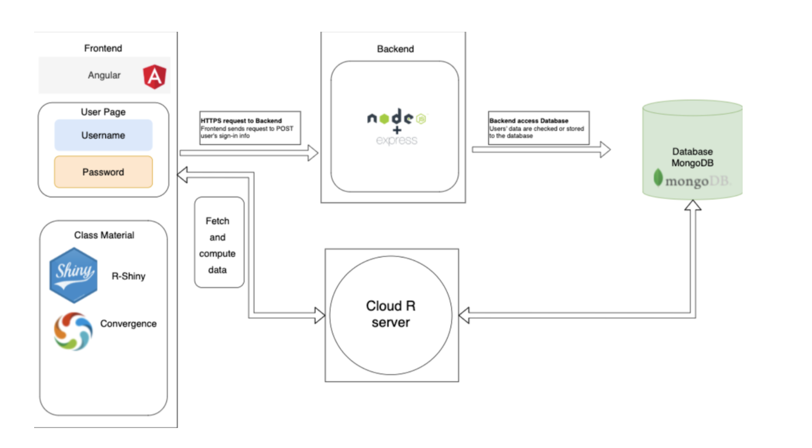

What are the major pieces of your overall system? Include your architecture diagram (or perhaps a simplified version of it) and describe it in a way the client can understand.

Our system includes a frontend based on Angular JS, a backend based on Node JS, and a database using MongoDB. The frontend includes everything that users can directly interact with such as the login boxes and the tutorials. The core of our frontend is two libraries called R-shiny and Convergence. While R-shiny can run and render any R scripts uploaded by the instructors, the real time data model provided by Convergence allows students to collaborate on the exercises simultaneously.The Node JS in the backend can process any HTTP request, for example a click, from our website. The backend will ask the database for the data of interest. The MongoDB database stores all the data we need for this project, such as users’ usernames and passwords.
Update: we later find that React works better since we don’t need to hold the dataset by our database. Convergence helps hold all the live data, therefore, as a light-weight frontend tool, we choose React for the frontend.
Where is each piece deployed?
Most of the frontend and backend code is deployed to heroku. The Convergence server is separately deployed to AWS.
How can the client manage everything? (You should give your client admin access over the infrastructure, if you haven’t already.)
With the heroku and AWS account, the client can manage the frontend, the backend, and all the Convergence real-time data models.
How much does everything cost? Is that subject to change? If so, under what conditions? Remember to include yearly subscriptions (like an Apple Developer membership) as well as monthly costs.
The deployment of Convergence to AWS costs about 100 dollars per month. That is subject to change if there are better or cheaper options.
Where does the code live? Is it open source or closed source? Does the client have a license to do what they want with it?
Our codes currently are uploaded onto a github public repository. The client is allowed to modify it, especially if he wants to add new features to it while passing it to the next generation of COMP 523 developers.
How can the client access the live app?
The client can access the app from a public website. We deployed an aws website. If he requests, we can also provide an almost-ready package which is just one click away from actually deploying it.
If the app isn’t generally available, is there a way that the client can share the app with somebody else, so that they can use it?
They can access the github repository, or use the almost-ready package.
Of the “need-to-have” user stories (see Assignment 2), which ones are complete, partially complete, or unstarted?
Based on our user stories:
1. As a student, in order to see what others are doing. (need to have)
2. As a student, in order to choose my friend to work together, I can log in with a specific role, for example, I can log in with role 'dog1' to match with students with roles 'dog2' and 'dog3'. (need to have)
3. As a student, in order to see my result, I can view my personal output by clicking a button, whereas others can't see my result. (need to have)
4. As a student, in order to fully learn about new materials, I can access all the buttons/choices on the website no matter what roles I log in with. (need to have)
We have completed the first one and forth one, and are currently working on the third one. We didn’t get a chance to work on the second one because we didn’t find a good way to add roles into our user components yet. To be specific, in order to add roles, we need to change some tutorials' views based on the roles students choose, which needs some further changes to our program logic and some changes in the database. Since Convergence just supplies one database to store the live data, there’s no good method to separate the tutorials given different roles.
Did you make any progress on the “nice-to-have” user stories? If so, which ones, and how much progress?
Base on our user stories:
1. As an instructor, in order to later add tutorials/teaching materials, I can log in and see all current resources and also add new ones.
2. As an instructor, in order to updates materials easily, I can have a place for me to plug in the javascript/r code.
3. As a researcher, in order to learn more about the teaching progress and effect, I can log in and see all the output results, with a log about students' clicks and chats.
4. As a student, in order to engage with others, I can chat on the website.
We have finished the fourth one. We are currently working on the second one. The third one was actually partially finished since researchers can go to the Convergence server to track some students' clicks and chats.
What do you think the highest priority next steps are?
We are currently working on the roles components which should be considered as highest priority since that is a need-to-have feature. We are also working on the mouse cursor feature which is also important. Besides, there might be some better way to deploy our website, currently we separately deployed Convergence, rshiny, and real web application. There might be a way to merge them to a single server.